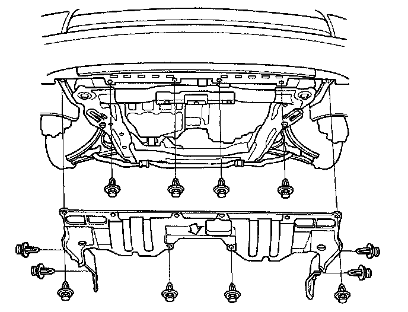
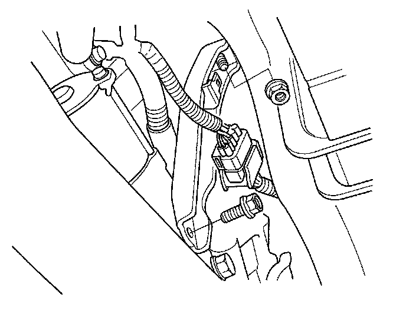
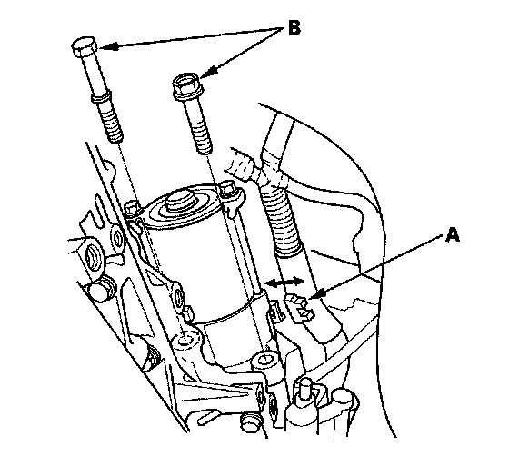
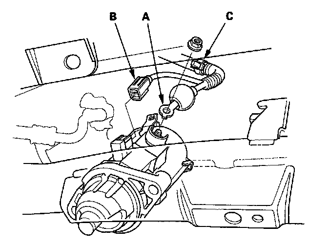
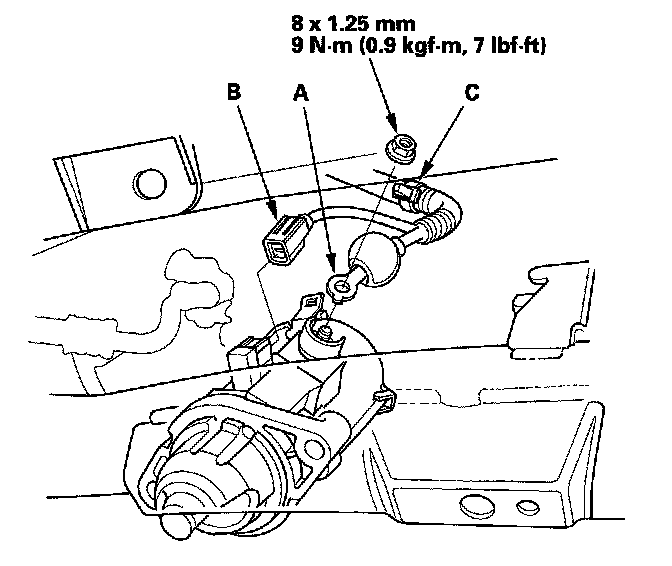
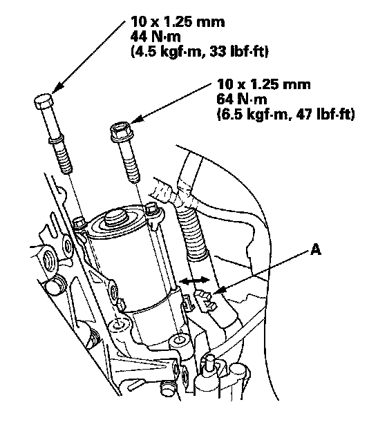
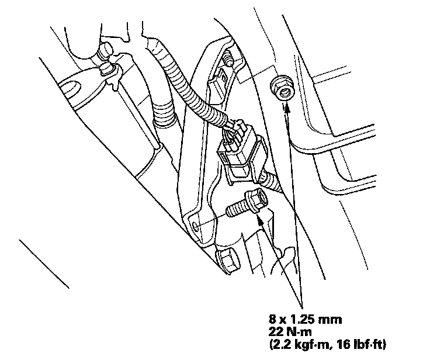
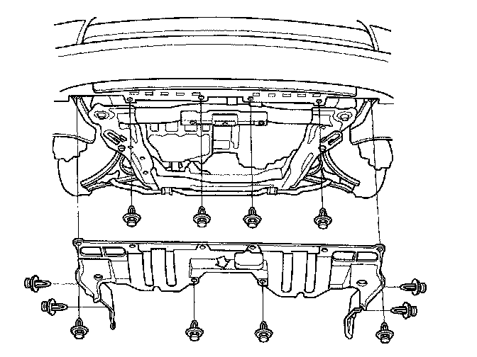

Removal and Replacement
Starter Removal and InstallationRemoval
1. Make sure you have the anti-theft code for the audio system and the navigation system (if equipped), then write down the audio presets.
2. Disconnect the negative cable from the battery first, then disconnect the positive cable.

3. Remove the splash shield.

4. Remove the intake manifold bracket.

5. Remove the harness clamp (A), and remove the two bolts (B) securing the starter, then remove the starter from the engine.

6. Disconnect the starter cable (A) from the B terminal, then disconnect the BLK/WHT wire (B) from the S terminal.
7. Remove the harness clamp (C), then remove the starter.
Installation

1. Install the starter cable (A) and BLK/WHT (B) wire. Make sure the starter cable crimped side of the ring terminal faces away from the starter when you connect it.
2. Install the harness clamp (C).

3. Install the starter, and tighten the bolts then install the harness clamp (A).

4. Install the intake manifold bracket.

5. Install the splash shield.
6. Connect the positive cable to the battery first, then connect the negative cable.
7. Start the engine to make sure the starter works properly.
8. Enter the anti-theft code for the audio system and the navigation system (if equipped), then enter the audio presets.
9. Set the clock.